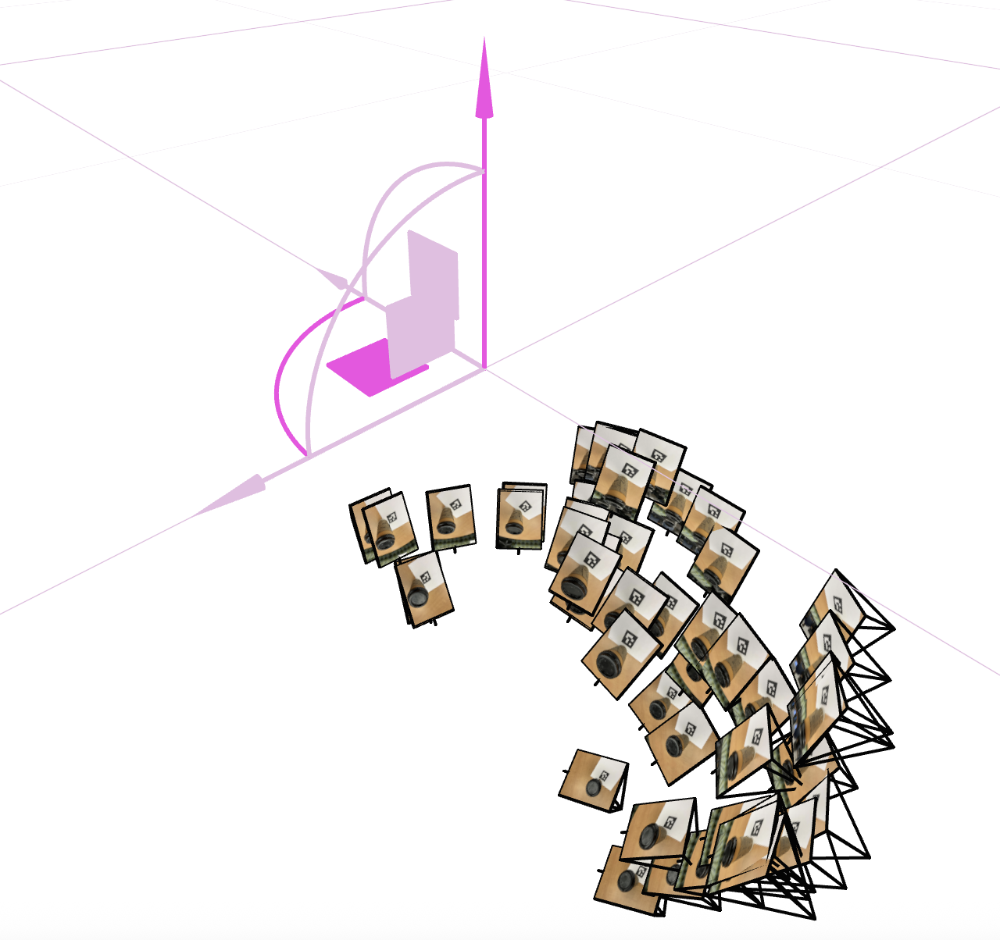
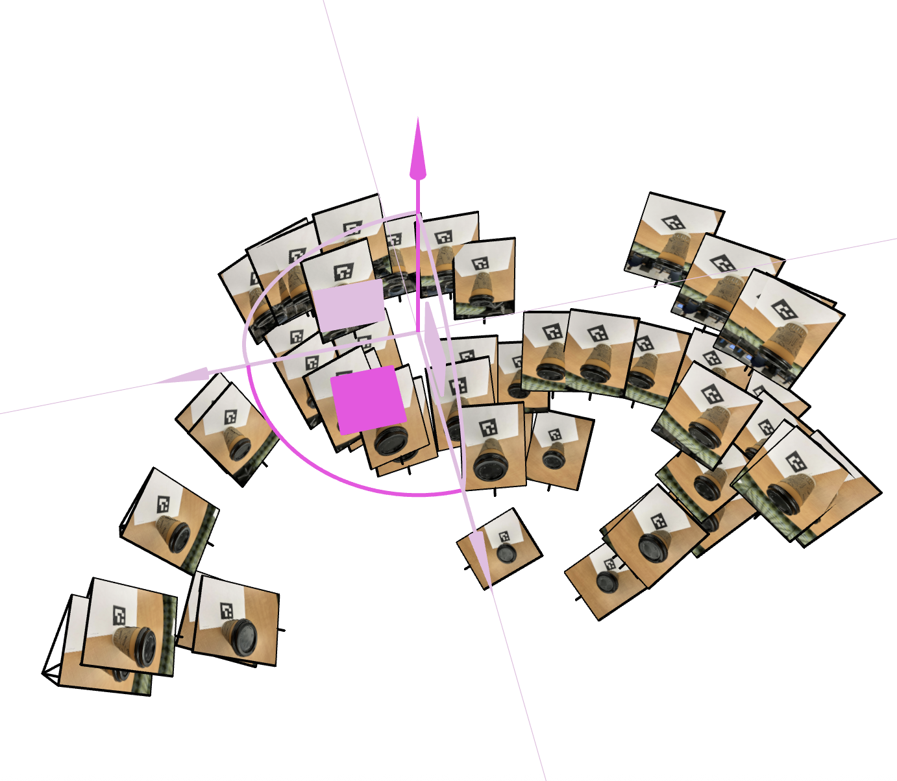
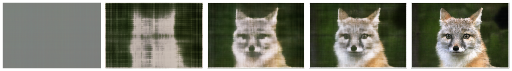

← Back
CS 180 Project 4: Neural Radiance Field!
Part 0: Calibrating Your Camera and Capturing a 3D Scan
First, I calculated camera intrinsics (K) and distortion coefficients. Next, I did a 3D object scan and calculated the camera poses for each of the images. Finally, I was able to undistort the image and create a dataset. Below are 2 screenshots of my cloud of cameras in Viser showing the camera frustums' poses and images.


Part 1: Fit a Neural Field to a 2D Image
Our model is a coordinate-based neural field that maps 2D pixel coordinates to RGB values. It uses a positional encoding with 10 frequency bands, expanding each (x, y) input to a 42-dimensional vector. This encoded vector is passed through an MLP with three hidden layers, each with width 256 and ReLU activations, followed by a final linear layer and a sigmoid to produce RGB values in the range [0, 1]. The network is trained for 2000 iterations using the Adam optimizer with a learning rate of 1e-2, minimizing MSE over random batches of 10,000 pixels.

A.3: Warp the Images
I implemented the warpImageNearestNeighbor(im,H) and warpImageBilinear(im,H) using inverse warping. To test the code, I applied it to 2 images for rectification.
Nearest Neighbor is fast but produces blocky or jagged results. Bilinear interpolation yields a smoother and more realistic transition but is slower.
A.4: Blend the Images into a Mosaic
Using the functions implemented above, I was able to create the following mosaics.
I created three image mosaics by selecting corresponding points between overlapping images, computing homographies, and warping both images onto a shared canvas. Each image was inverse-warped using both nearest-neighbor and bilinear interpolation, with bilinear interpolation producing smoother transitions. To reduce visible seams, I applied simple feathering - generating soft alpha masks and blending overlapping regions through weighted averaging. This approach helps minimize edge artifacts and ensures a more seamless, natural-looking mosaic.
Feature Matching for Autostitching
B.1: Harris Corner Detection
Harris corners are visualized on the images, both before and after applying ANMS.
B.2: Feature Descriptor Extraction
We extract compact, axis-aligned 8x8 descriptors around each Harris corner. Each descriptor is sampled from a larger 40x40 window, then bias/gain normalized (zero mean, unit variance) to reduce lighting effects.
B.3: Feature Matching
We match features by comparing their 8x8 descriptors and applying Lowe's ratio test: a match is accepted only if the nearest neighbor is significantly closer than the second nearest. This filters out ambiguous pairs and keeps reliable correspondences. Below, we visualize the resulting matches across each image pair.
B.4: RANSAC for Robust Homography
We estimate homographies with 4-point RANSAC: repeatedly sample 4 correspondences, solve for H, score by reprojection error to keep a consensus of inliers, then refit H on those inliers for stability. Using the recovered H, we warp and blend images to form panaromas. Below, we show manual vs. automatic stitching side-by-side for several mosaics.
Automatic stitching produces cleaner, more consistent panoramas since it removes human alignment errors and optimizes overlaps mathematically. As a result, the final images are smoother and exhibit noticeably less geometric distortion.